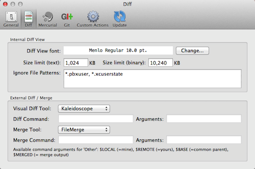

Preferences: Diff

This is where you set your preferences for the in-application diff panes, and to pick the tools you wish to use for performing external diff and merge opterations.
Internal Diff View
These options control how the diff panels behave inside SourceTree.
Diff View Font: Allows you to select the font which will be used to render the diff panels
Size Limits: Large files can slow down the diff view, so these limits control at what point SourceTree stops displaying the inline diff (or QuickLook preview in the case of binary files) and just displays a placeholder instead. You can look at these files via the external diff function if you want, but at least performing the diff on these files won't slow down your other tasks.
Ignore file patterns: Any file which matches these patterns will not be displayed in the diff panel. This is useful for suppressing the diff for system-generated files which are of no real interest and can slow down the diff process. By default, SourceTree ignores user state files generated by XCode, but you can add more here.
External Diff / Merge
Here is where you set the external diff/merge tools. SourceTree has in-built support for FileMerge, DiffMerge, Araxis Merge, KDiff3 and more, but if you wish to use another tool you can select 'Other' and provide your own tool information.
If you do choose to use 'Other', then you should supply the full path to the tool you wish to use in the 'Command' field, and the parameters that will be needed in the 'Arguments' field, with the following placeholders being available to supply file names:
- $LOCAL - the name of the file on your local system
- $REMOTE - the name of the file containing the other contents you're diffing or merging against
- $BASE - in the case of a merge, the name of a file containing the common ancestor of $LOCAL and $REMOTE
- $MERGED - the name of the file to save merge results to
Obviously 'Diff' only needs the first two parameters. For merges, you should really pick a tool which supports 3-way merging to make your life easier (all of the tools that SourceTree supports out of the box are capable of 3-way merging).
See also
General Preferences
Mercurial Preferences
Git Preferences
Custom Actions Preferences
Update Preferences